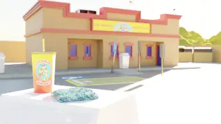

Formación
- Educación Secundaria Obligatoria 2018-2022
- Bachillerato de artes Jesuitas el Clot 2022-2024
- Desarrollo de aplicaciones multiplataforma ENTI 2024-Actualidad
Aptitudes y herramientas
- C++ Básico, desde 2024
- SQL Básico, desde 2024
- Bash Básico, desde 2024
- Unity Básico, desde 2024
- Html y Css Básico, desde 2021
- KOS Intermedio, desde 2021
- Blender Intermedio-Alto, desde 2021
- Photoshop Intermedio-Alto, desde 2018
- Illustrator Intermedio, desde 2021
- Substance Painter Básico, desde 2024
- Autocad - Autodesk Intermedio, desde 2022
Proyectos personales:
- Creación de mapas y texturas para Assetto Corsa, 2022-Actualidad
- Scripts para Kerbal Space Program (KOS), 2020-Actualidad
- Creación de renders y pantallas de carga con Blender, 2022-2023
